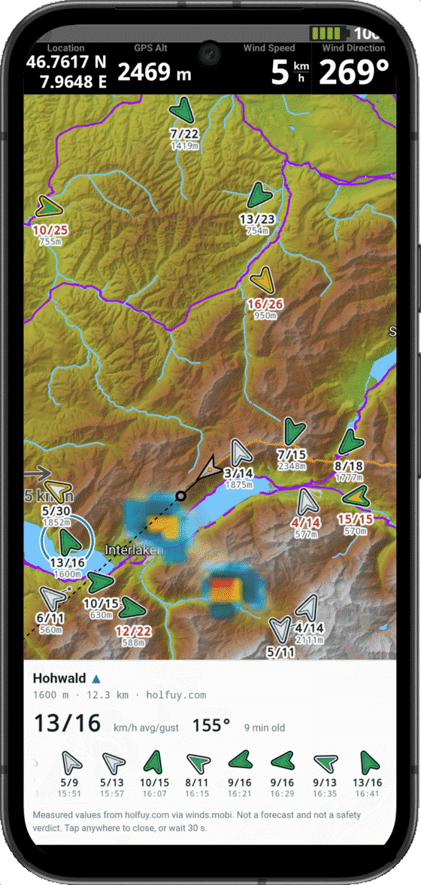
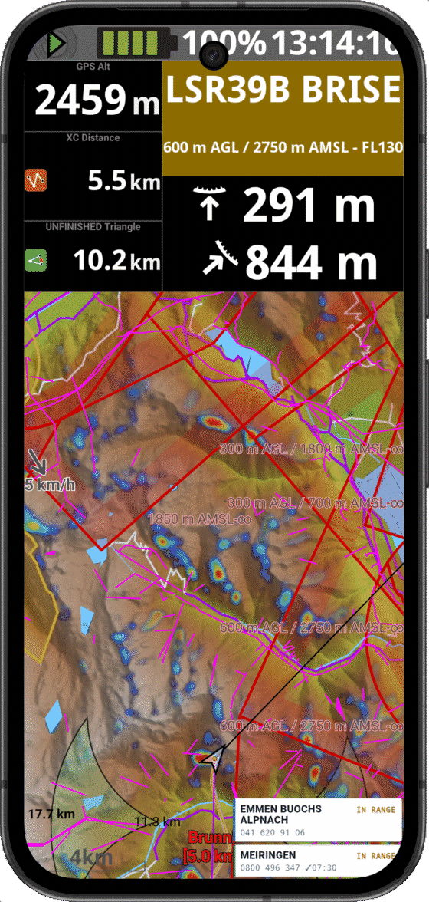

Two small tools for cross-country paraglider pilots. They run inside XCTrack as a web page widget, or on their own in any browser. Free, no account, nothing tracked.
Live wind station readings
Wind stations near you, drawn where they actually are. Speed, gust and direction for each one, so you can tell a valley-floor reading from a summit reading before you commit to a glide.

HX airspace phone directory
Swiss HX airspaces have no fixed hours. They can switch on at 30 minutes’ notice, and where one publishes a number you are allowed to check its status by phone. This finds the right number for wherever you are.

Your position stays on your phone. Windmap asks winds.mobi which stations are in the area around you, and that is the only thing either tool ever sends. No accounts, no analytics, no tracking.
The wind readings are not ours. Windmap draws what winds.mobi serves, which aggregates MeteoSwiss, SLF, Holfuy, OpenWindMap and others. The measurements belong to those networks.
Unofficial, and no warranty. These show measured facts. They are not forecasts, and never a verdict on whether a flight is safe. Only the official publications have legal validity, and you are responsible for your own flight preparation.